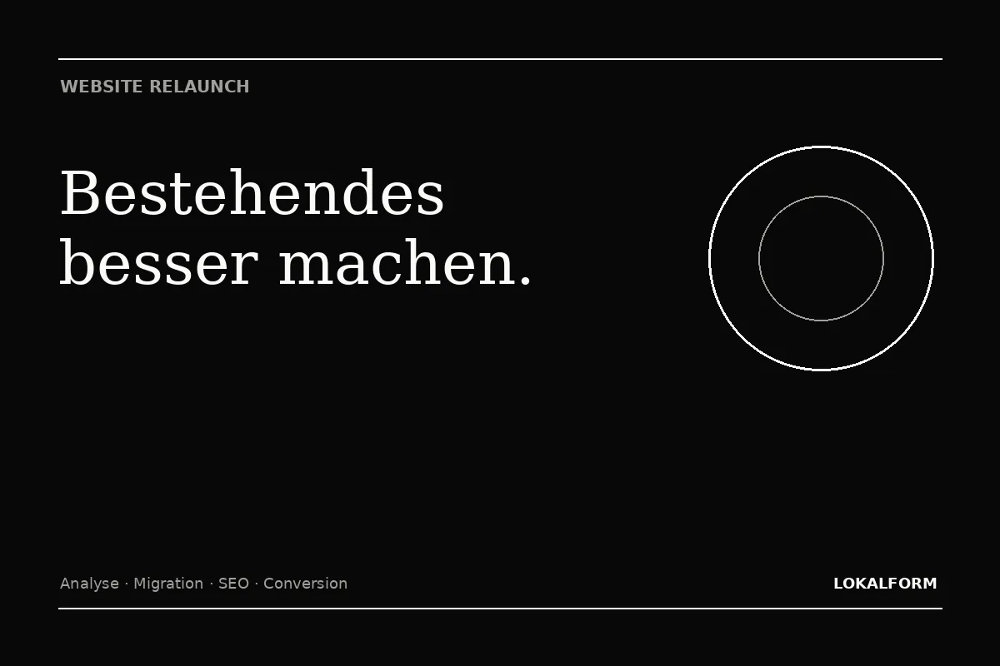

Bestehende Seiten, Inhalte, URLs, Formulare und wichtige Funktionen erfassen.
Bestehendes besser machen
Website Relaunch
Ein Relaunch soll nicht nur moderner aussehen. Er soll Struktur, Nutzung und Sichtbarkeit verbessern – ohne vorhandene Inhalte und URLs unkontrolliert zu verlieren.

Relaunch
Neu gestalten, ohne vorhandene Sichtbarkeit leichtfertig wegzuwerfen.
Ein Website-Relaunch ist mehr als ein neues Design. Bestehende URLs, Inhalte und Rankings können bereits Wert aufgebaut haben. Werden Seiten einfach gelöscht oder Adressen verändert, ohne Weiterleitungen und Inhalte zu planen, kann dieser Wert verloren gehen. Deshalb beginnt ein Relaunch mit einer Bestandsaufnahme.
Wir prüfen, welche Seiten weiterhin gebraucht werden, welche Inhalte zusammengeführt werden können und welche URL bestehen bleiben sollte. Erst danach wird die neue Struktur entwickelt. So entsteht ein moderner Auftritt, ohne die alte Website blind abzuschalten.
URL-Änderungen, Weiterleitungen und interne Links vor dem Livegang planen.
Design, Seitenführung, mobile Nutzung und Conversion gezielt modernisieren.
Checkliste
Was beim Relaunch erhalten bleiben sollte.
| Element | Prüfung |
|---|---|
| Wichtige URLs | Beibehalten oder mit 301 sauber auf die passendste neue Seite weiterleiten. |
| Starke Inhalte | Nicht wegen eines neuen Designs ohne Grund kürzen oder entfernen. |
| Seitentitel & Suchintention | Neue Titel müssen zum tatsächlichen Inhalt der neuen Seite passen. |
| Bilder | Crawlbare HTML-Bilder, sinnvolle Dateinamen, Alt-Texte und Größenoptimierung. |
| Sitemap | Nach dem Launch nur die neuen kanonischen, indexierbaren URLs einreichen. |
| Search Console | Indexierung, 404-Fehler und Veränderungen nach dem Relaunch beobachten. |
Wann sinnvoll?
Relaunch, wenn Struktur zum Problem wird.
Ein Relaunch lohnt sich besonders, wenn die Website mobil schlecht funktioniert, Leistungen nicht mehr zum aktuellen Unternehmen passen, Inhalte schwer zu pflegen sind oder neue Funktionen in eine alte Struktur gequetscht werden. Wenn nur einzelne Texte oder Bilder veraltet sind, reicht dagegen oft eine gezielte Überarbeitung.
Nächster Schritt
Aus einer Idee wird eine klare Website.
20 Minuten reichen für eine erste Richtung: Ziel, Umfang, Seitenstruktur und sinnvolle Funktionen.
Termin auswählen ↗